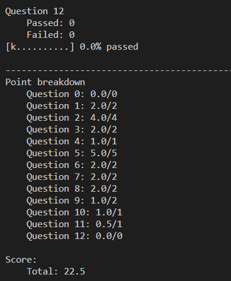
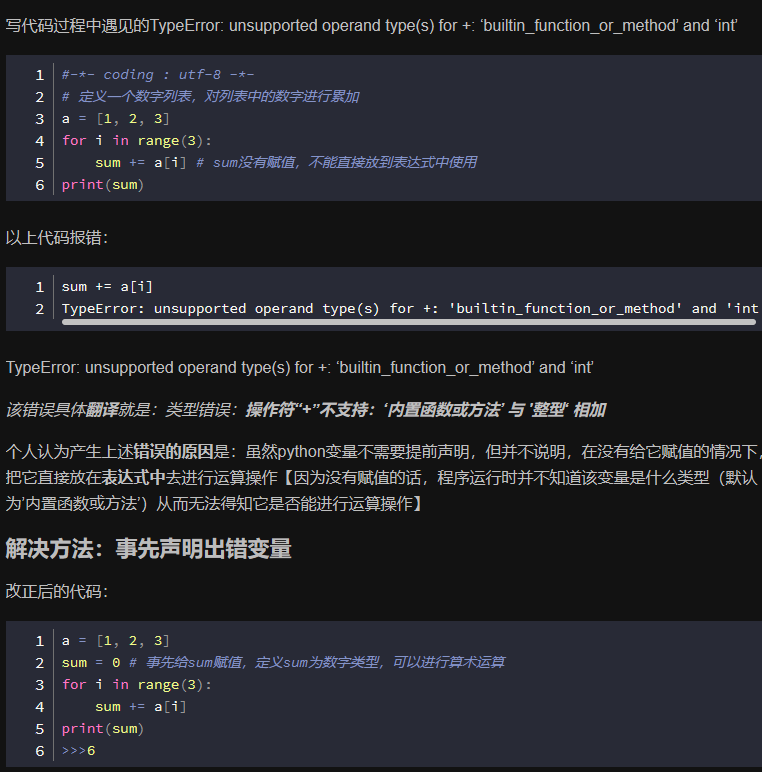
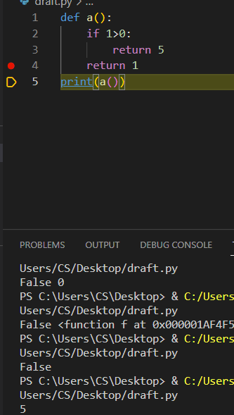
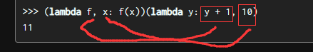
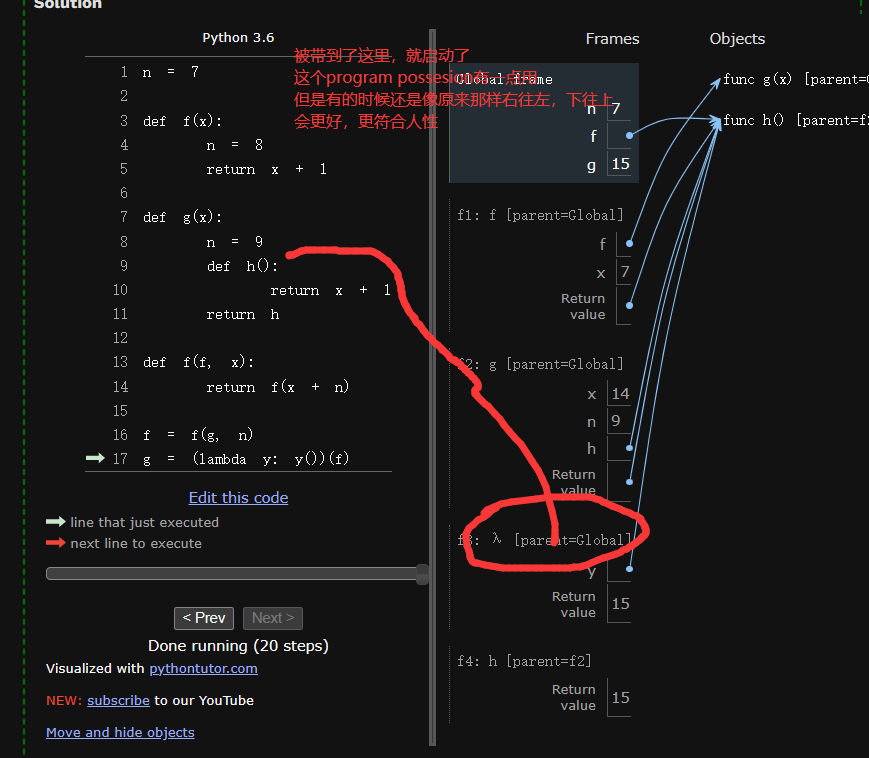

project1
1月28就完成了Problem 8
发
据说是拿不到满分的，我-u用例全过了你tm 没有-u有一个不过
群里说cs61a就是拿来筛人的，后面keep going on就可了
textbook之前是finish1.1-1.6 chapter1还有1.7应该是
现在直接3.3了？好像后面会补，这个exception好像概论的时候讲过
链接
一些语句，看了知道，不看死想也想不到
- 
执行顺序
 虽然最下面那句在这里没卵用，但是不写就会报错注意识别，后面是一个lambda和一个参数
- 